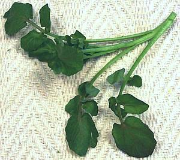

Watercress

[Kotem (Armenia), B. Nasturtium nasturtium-aquaticum and
N. microphyllum]
Watercress, native to Europe and Western Asia, has been cultured and
eaten since prehistoric times. Its relatively mild mustardy bite is
a welcome addition to green salads and in sandwiches, but it's also
used cooked in soups and other recipes. Depending on how it was grown
and cut some of the stems can be quite large. All but the largest can
be used along with the leaves as they are hollow, tender and have much
the same flavor as the leaves.
Watercress has historically been an important green in Ireland and is
still fairly widely used there, but Asian immigrants have greatly increased
demand in North America.
More on Mustard and Cabbage Herbs
Buying:
Look for bunches that are crisp, with moderate size
stems and particularly watch out for yellowing leaves. Here in Los Angeles
watercress is sold in banded bunches typically 7 inches long and weighing
between 4 and 5-1/2 ounces. Thickness of the thicker stems varies widely.
In the Asian markets the bunches tend to be larger and the price lower
than in other markets, due to volume.
Storing:
A slightly wilted bunch can be revived by cutting
off the bottom 1/4 inch of the stems and standing in a cup of cold water
in a cool place for 20 minutes or so. Wrap loosely in plastic and store
in the refrigerator. Watercress is very perishable and even a good bunch
will be yellowing in two or three days.
Cooking:
Watercress is very often used raw, but if not,
cooking should be minimal. Watercress is typically added to soups and the
like in the last minute or two. Watercress is always cooked in Chinese
recipes because they don't use raw vegetables there - for reason.
cb_wcressz 070312 - www.clovegarden.com
©Andrew Grygus - info@clovegarden.com - Photos on this
page not otherwise credited are © cg1 -
Linking to and non-commercial use of this page permitted